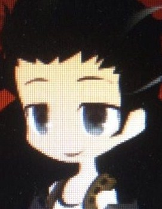

[團務與邀約] 【原創】蟲鳴之時：都市影踏遊戲
artis 小學部畢業生
| 上台說話的大中小簡繁發表於 5-27-2014 02:27 AM 只看該作者 |
酒館http://revo-create.com/viewthread.php?tid=74695&page=4&authorid=42156 這個顏色是愛兒提斯(另一人格，20歲成熟女聲) 這個顏色是阿爾提斯(少女音) 黑色是阿爾提斯(少年音) | |
| artis 小學部畢業生
| 上台說話的大中小簡繁發表於 5-27-2014 02:27 AM 只看該作者 |
酒館http://revo-create.com/viewthread.php?tid=74695&page=4&authorid=42156 這個顏色是愛兒提斯(另一人格，20歲成熟女聲) 這個顏色是阿爾提斯(少女音) 黑色是阿爾提斯(少年音) | |
g0cai0g 小學部畢業生
| 樓下發言的大中小簡繁發表於 5-27-2014 05:36 AM 只看該作者 |
//revo-create.com/viewthread.php?tid=26685&page=41&authorid=54974 | |
| 亞克斯  幼幼班畢業生
| 5☆大中小簡繁發表於 5-28-2014 12:11 AM 只看該作者 |
角色http://revo-create.com/redirect.php?goto=findpost&pid=1110096&ptid=74695 | |
秋雪狼 小學部畢業生
| 6☆大中小簡繁發表於 5-28-2014 06:16 PM 只看該作者 |
亞伯特角色卡：http://revo-create.com/redirect.php?goto=findpost&pid=1143646&ptid=74695 | |
withwind1235 小學部畢業生
| 8☆大中小簡繁發表於 5-29-2014 02:04 AM 只看該作者 |
| 秋雪狼 小學部畢業生
| 11☆大中小簡繁發表於 6-4-2014 07:15 PM 只看該作者 |
亞伯特角色卡：http://revo-create.com/redirect.php?goto=findpost&pid=1143646&ptid=74695 | |
| artis 小學部畢業生
| 12☆大中小簡繁發表於 6-4-2014 09:01 PM 只看該作者 |
酒館http://revo-create.com/viewthread.php?tid=74695&page=4&authorid=42156 這個顏色是愛兒提斯(另一人格，20歲成熟女聲) 這個顏色是阿爾提斯(少女音) 黑色是阿爾提斯(少年音) | |
| artis 小學部畢業生
| 21☆大中小簡繁發表於 6-14-2014 11:40 PM 只看該作者 |
酒館http://revo-create.com/viewthread.php?tid=74695&page=4&authorid=42156 這個顏色是愛兒提斯(另一人格，20歲成熟女聲) 這個顏色是阿爾提斯(少女音) 黑色是阿爾提斯(少年音) | |
| g0cai0g 小學部畢業生
| 31☆大中小簡繁發表於 8-28-2014 09:34 AM 只看該作者 |
//revo-create.com/viewthread.php?tid=26685&page=41&authorid=54974 | |


 )
)